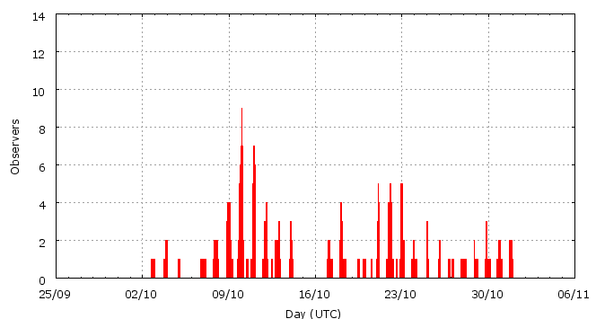

[ www.imo.net ]
This page shows automated results of the Orionids 2010, based on visual observations by volunteers astronomers collected through the report form of the International Meteor Organization (IMO). The information on this page is generated automatically; for scientific use please refer to manual analyses published in scientific journals (such as WGN). Send your feedback regarding this page to Geert Barentsen.
Page contents:
Page generated: 2010 November 11 at 1:00 UTC.
The graph below shows the ZHR (Zenithal Hourly Rate), which is the number of meteors an observer would see under a very dark sky with the radiant of the shower in zenith.
ZHRmax = 38 based on 1214 Orionids reported in 322 intervals, assuming population index r = 2.0

| Time (UTC) | Solarlon | nINT | nORI | ZHR | Particle density | |
|---|---|---|---|---|---|---|
| 2010-10-03 17:12 | 190.240 | 8 | 19 | 9 | ±2 | 8 / 109·km3 |
| 2010-10-06 03:31 | 192.634 | 5 | 3 | 4 | ±2 | 3 / 109·km3 |
| 2010-10-07 19:21 | 194.272 | 23 | 48 | 5 | ±1 | 4 / 109·km3 |
| 2010-10-09 12:40 | 195.972 | 30 | 53 | 4 | ±1 | 3 / 109·km3 |
| 2010-10-10 02:14 | 196.531 | 17 | 50 | 5 | ±1 | 4 / 109·km3 |
| 2010-10-11 00:36 | 197.452 | 27 | 51 | 4 | ±1 | 3 / 109·km3 |
| 2010-10-12 07:21 | 198.720 | 24 | 55 | 5 | ±1 | 4 / 109·km3 |
| 2010-10-13 19:29 | 200.210 | 12 | 33 | 6 | ±1 | 5 / 109·km3 |
| 2010-10-17 08:27 | 203.719 | 14 | 51 | 8 | ±1 | 7 / 109·km3 |
| 2010-10-18 02:58 | 204.485 | 9 | 57 | 11 | ±1 | 9 / 109·km3 |
| 2010-10-19 01:52 | 205.432 | 8 | 58 | 15 | ±2 | 13 / 109·km3 |
| 2010-10-20 07:06 | 206.642 | 7 | 56 | 35 | ±5 | 30 / 109·km3 |
| 2010-10-21 01:51 | 207.419 | 11 | 53 | 29 | ±4 | 24 / 109·km3 |
| 2010-10-21 03:40 | 207.494 | 11 | 115 | 36 | ±3 | 30 / 109·km3 |
| 2010-10-21 23:32 | 208.316 | 12 | 50 | 26 | ±4 | 22 / 109·km3 |
| 2010-10-22 02:58 | 208.459 | 16 | 141 | 38 | ±3 | 32 / 109·km3 |
| 2010-10-22 22:40 | 209.275 | 19 | 55 | 20 | ±3 | 17 / 109·km3 |
| 2010-10-23 05:36 | 209.563 | 7 | 50 | 27 | ±4 | 23 / 109·km3 |
| 2010-10-24 00:26 | 210.344 | 8 | 56 | 36 | ±5 | 30 / 109·km3 |
| 2010-10-25 09:59 | 211.736 | 12 | 38 | 15 | ±2 | 13 / 109·km3 |
| 2010-10-28 02:00 | 214.395 | 15 | 54 | 9 | ±1 | 8 / 109·km3 |
| 2010-10-30 04:59 | 216.517 | 18 | 51 | 7 | ±1 | 6 / 109·km3 |
| 2010-10-31 15:08 | 217.939 | 9 | 17 | 5 | ±1 | 4 / 109·km3 |
The reported intervals are automatically added together into the bins shown above, based on the number of meteors and the distribution of the intervals. For each bin, the following parameters are computed:
Data has been received from 26 observers in 15 countries. Thank you for your efforts!
Note: click on the map for an interactive version.

| Observer | Country | Teff | nORI |
|---|---|---|---|
| Salvador Aguirre | Mexico | 2.00h | 7 |
| Pierre Bader | Germany | 19.05h | 48 |
| Tim Cooper | South Africa | 8.05h | 43 |
| John Drummond | New Zealand | 1.00h | 4 |
| Alexandre Gil | Brazil | 2.34h | 18 |
| Mitja Govedic | Slovenia | 1.33h | 1 |
| Wayne T. Hally | United States | 5.85h | 16 |
| Vilem Heblik | Czech Republic | 31.50h | 86 |
| Carl Johannink | Netherlands | 3.95h | 7 |
| Javor Kac | Slovenia | 5.89h | 54 |
| Jakub Koukal | Czech Republic | 111.99h | 446 |
| Roman Kovalyk | Italy | 2.30h | 1 |
| Peter Van Leuteren | Netherlands | 3.80h | 12 |
| Tomasz Lojek | Poland | 16.25h | 43 |
| Mikhail Maslov | Russia | 1.92h | 2 |
| Aleksandar Matic | Serbia | 3.16h | 20 |
| Koen Miskotte | Netherlands | 24.47h | 102 |
| Sirko Molau | Germany | 2.00h | 21 |
| Dusan Pavlovic | Serbia | 1.50h | 8 |
| Jurgen Rendtel | Germany | 13.73h | 86 |
| Sergei Schmalz | Germany | 17.3h | 16 |
| Marko Stankovic | Serbia | 1.98h | 4 |
| Wesley Stone | United States | 3.02h | 90 |
| Richard Taibi | United States | 3.05h | 2 |
| Michel Vandeputte | Belgium | 21.85h | 100 |
| Kristina Veljkovic | Serbia | 2.13h | 10 |
Create your own analysis. The files below can be opened using Excel:
ori2010_rate.csv (number of meteors per interval per observer)
ori2010_magn.csv (number of meteors per magnitude bin per observer)
The information on this page may be distributed freely provided credit is given to the International Meteor Organization (IMO) and, when possible, to the individual observers. The computer facilities to generate this page are provided by the Urania Public Observatory in Belgium and Armagh Observatory in Northern Ireland.
References: